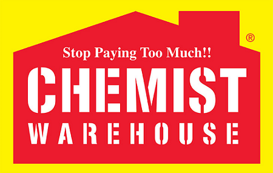
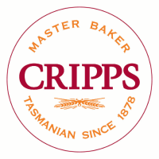
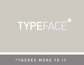

Home Ground The Home Ground of the Hobart Hurricanes is Blundstone Arena . It has a capacity of 19,500. It is located on Hobart's Eastern Shore in the suburb of Bellerive.
 The stadium contains a hill for sitting on as well as four main areas-
The stadium contains a hill for sitting on as well as four main areas-The unofficial website of the Hobart Hurricanes Cricket Club. The Hobart Hurricanes are the Twenty Twenty Big Bash team representing Hobart on a domestic level.
Fanbase The Hurricanes Fanbase are called The Purple Army.
Home Ground The Home Ground of the Hobart Hurricanes is Blundstone Arena . It has a capacity of 19,500. It is located on Hobart's Eastern Shore in the suburb of Bellerive. The stadium contains a hill for sitting on as well as four main areas-
Players Hobart Hurricanes house an all-star line up including the likes of


History the Hurricanes have been part of The Australian Domestic twenty twenty league since it first started. The Hurricanes have never won but have been close.
Representation the teams that finish top two each season in the Big Bash League enter the Champions league twenty twenty league which puts the clubs on an international stage. They play against the best twenty twenty teams from other leagues around the world.
Fixtures
Sponsors The sponsors of the Hobart Hurricanes include
Chemist Warehouse 
Cripps Bakery 
Hydralyte 
My State
THe Old Woolstore Apartment Hotel
RACT 
Wilson Security 
Typeface printing 